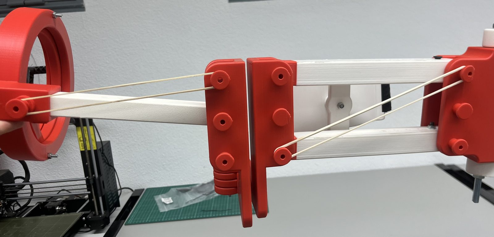

Erasmus+ semester at Luleå University of Technology, Sweden (Aug – Dec 2023).
Semestre Erasmus+ en Luleå University of Technology, Suecia (ago. – dic. 2023).
Robotics Engineer · Embedded C/C++ & robotics software
Ingeniero en Robótica · C/C++ embebido y software para robótica
I work on flight-critical C++ for Amazon Prime Air's MK30 delivery drone under DO-178C. Outside work I build systems end to end: a sensorised pediatric exoskeleton, robot vision for pick-and-place, and a C++23 graphics engine with its own networking.
Trabajo en software de vuelo crítico en C++ para el dron de reparto MK30 de Amazon Prime Air, bajo DO-178C. Fuera del trabajo construyo sistemas de principio a fin: un exoesqueleto pediátrico sensorizado, visión artificial para pick-and-place y un motor gráfico en C++23 con red propia.
AboutSobre mí
I graduated in Robotics Engineering at the University of Alicante, with an Erasmus+ semester in Luleå, Sweden. Since October 2025 I have been at Embention, verifying the flight software of a commercial delivery drone under DO-178C: writing unit tests, reporting defects and preparing certification documentation.
Me gradué en Ingeniería Robótica en la Universidad de Alicante, con un semestre Erasmus+ en Luleå (Suecia). Desde octubre de 2025 estoy en Embention, verificando el software de vuelo de un dron de reparto comercial bajo DO-178C: pruebas unitarias, reporte de defectos y documentación de certificación.
What I enjoy most is building: hardware, firmware and software working together on something real. I am looking for a role where I design and develop robotics or embedded software in a team that talks openly and helps each other, and in the longer term I want to grow towards technical project management.
Lo que más disfruto es construir: hardware, firmware y software funcionando juntos en algo real. Busco un puesto donde diseñar y desarrollar software de robótica o embebido, en un equipo que se comunique y se ayude, y a más largo plazo quiero crecer hacia la gestión técnica de proyectos.
Away from the keyboard I coordinate a youth association with about 30 volunteer monitors.
Fuera del teclado coordino una asociación juvenil con unos 30 monitores voluntarios.
ExperienceExperiencia
Embention
AIJU · Technological Institute for Children's Products and LeisureInstituto Tecnológico de Producto Infantil y Ocio
ProjectsProyectos
Hardware, firmware and software I designed and built, with the details on each page.
Hardware, firmware y software que he diseñado y construido, con los detalles en cada página.

Bachelor's thesisTFGA passive, adjustable rehabilitation orthosis for children aged 7 to 17. I designed and 3D-printed it, sensorised it with 7 IMUs on an ESP32, computed joint angles with sensor fusion, validated the kinematics in MATLAB and connected it to a VR rehabilitation game.
Una órtesis de rehabilitación pasiva y ajustable para niños de 7 a 17 años. La diseñé e imprimí en 3D, la sensoricé con 7 IMU sobre una ESP32, calculé los ángulos articulares con fusión de sensores, validé la cinemática en MATLAB y la conecté a un juego de rehabilitación en realidad virtual.
Read the case studyVer el proyecto →An engine with an ECS architecture, deferred rendering and real-time global illumination in compute shaders, plus a client-server network layer. Built in pair programming.
Un motor con arquitectura ECS, renderizado diferido e iluminación global en tiempo real en compute shaders, más una capa de red cliente-servidor. Desarrollado en pair programming.
See the architectureVer la arquitectura →Detecting and classifying screws by radius and length, then computing their centre so a Universal Robots arm can pick them with an MSC gripper.
Detección y clasificación de tornillos por radio y longitud, y cálculo de su centro para que un brazo Universal Robots los coja con una pinza MSC.
See the pipelineVer el sistema →SkillsHabilidades
Levels are honest: "academic" means used at university, not in production.
Los niveles son honestos: "académico" significa usado en la universidad, no en producción.
EducationFormación
Erasmus+ semester at Luleå University of Technology, Sweden (Aug – Dec 2023).
Semestre Erasmus+ en Luleå University of Technology, Suecia (ago. – dic. 2023).
Leadership & volunteeringLiderazgo y voluntariado
I lead a team of about 30 volunteer monitors: planning activities and camps, managing budget and permits, training new monitors and liaising with families.
Coordino un equipo de unos 30 monitores voluntarios: planificación de actividades y campamentos, gestión de presupuesto y permisos, formación de monitores nuevos y relación con las familias.
I'm open to robotics, embedded C/C++ and medical robotics roles in Spain, across Europe or remote. The fastest way to reach me is email.
Estoy abierto a puestos de robótica, C/C++ embebido y robótica médica en España, en Europa o en remoto. La forma más rápida de contactarme es el email.